Final Project by Joseph Martinsen
Math 308-510 - Dr. Pilant
Contents
Case 1
clear; close all; clc; % Constents g = 32; m1 = 2; m2 = 1; L1 = 1; L2 = 2; fprintf('For case 1, the following inital values are used\nm1 = 2\n') fprintf('m2 = 1\nL1 = 1\nL2 = 2\nu1 = 1.57\nu1prime = 0\nv1 = 3.14\nv1prime = 0') u1 = 1.57; u1_prime = 0; v1 = 3.14; v1_prime = 0; % Solve Differential Equation options = odeset('AbsTol',1e-6,'RelTol',1e-6); [t,y]= ode45('pend_func' , [ 0 100], [ u1 ; u1_prime ; v1 ; v1_prime ],options); % Potential Energy PE = -(m1+m2)*g*L1*cos(y(:,1))-m2*g*L2*cos(y(:,3)); % Kinetic Energy KE = 1/2*m1*L1.^2*y(:,2).^2 + 0.5*m2*(L1.^2*y(:,2).^2+L2.^2*y(:,4).^2 + 2* L1*L2*y(:,2).*y(:,4).*cos(y(:,1)-y(:,3))); % Total Energy E=PE+KE; % Position Values x = L1* sin( y(:,1)) + L2*sin(y(:,3)); yplot = -L1* cos(y(: ,1)) - L2*cos(y(:,3)); % Plots plot(x, yplot); axis([-3 3 -3 2]) title('Double Pendulum') figure; plot(t,y(:,1)); title('Theta 1 vs Time') figure; plot(t,y(:,3)); title('Theta 2 vs Time') figure; plot(t,PE); title('Potential Energy') figure; plot(t,KE); title('Kinetic Energy') figure; plot(t,E); title('Total Energy') figure; plot(t,E); title('Total Energy') axis([0 100 0 100]) fprintf('Total energy deviation %f %% \n', 100*(max(E)-min(E))/(max(E)))
For case 1, the following inital values are used m1 = 2 m2 = 1 L1 = 1 L2 = 2 u1 = 1.57 u1prime = 0 v1 = 3.14 v1prime = 0Total energy deviation 0.022006 %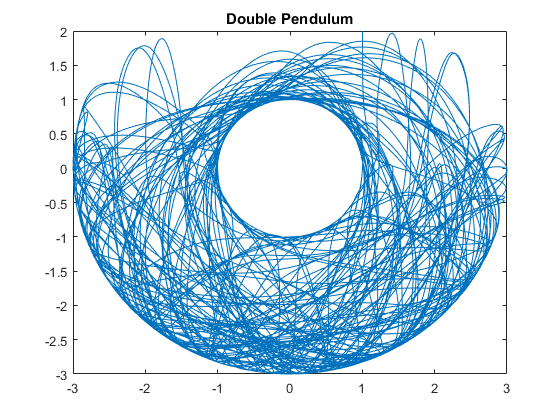 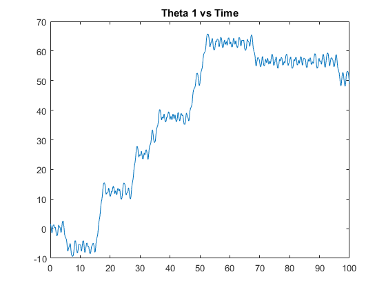 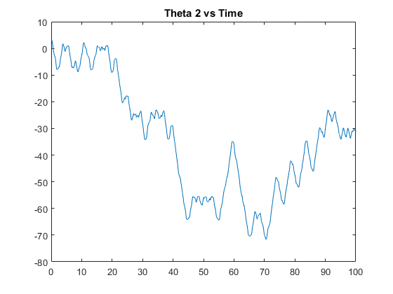 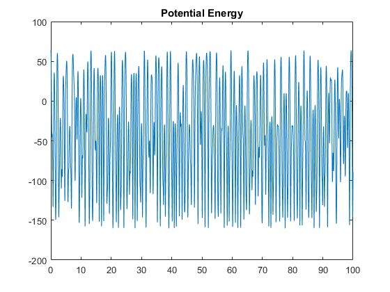 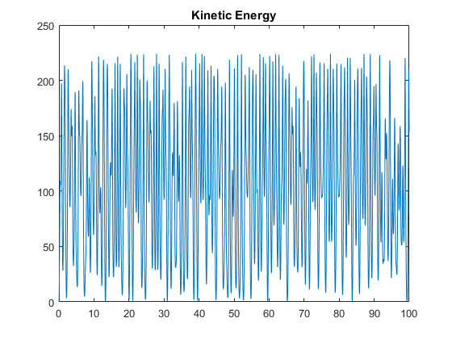 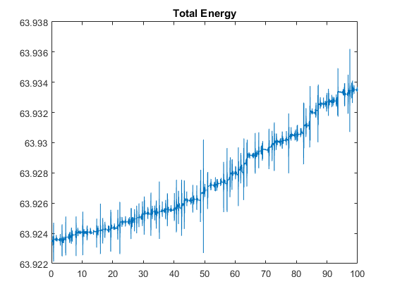 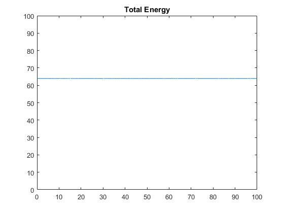
Case 2
clear; clc; % Constents g = 32; m1 = 2; m2 = 1; L1 = 1; L2 = 2; fprintf('For case 2, the angles will differ from Case 1.\n') fprintf('The following inital values are used\nm1 = 2\n') fprintf('m2 = 1\nL1 = 1\nL2 = 2\nu1 = 2\nu1prime = 0\nv1 = 1\nv1prime = 0') u1 = 2; u1_prime = 0; v1 = 1; v1_prime = 0; % Solve Differential Equation options = odeset('AbsTol',1e-6,'RelTol',1e-6); [t,y]= ode45('pend_func' , [ 0 100], [ u1 ; u1_prime ; v1 ; v1_prime ],options); % Potential Energy PE = -(m1+m2)*g*L1*cos(y(:,1))-m2*g*L2*cos(y(:,3)); % Kinetic Energy KE = 1/2*m1*L1.^2*y(:,2).^2 + 0.5*m2*(L1.^2*y(:,2).^2+L2.^2*y(:,4).^2 + 2* L1*L2*y(:,2).*y(:,4).*cos(y(:,1)-y(:,3))); % Total Energy E=PE+KE; % Position Values x = L1* sin( y(:,1)) + L2*sin(y(:,3)); yplot = -L1* cos(y(: ,1)) - L2*cos(y(:,3)); % Plots plot(x, yplot); title('Double Pendulum') figure; plot(t,y(:,1)); title('Theta 1 vs Time') figure; plot(t,y(:,3)); title('Theta 2 vs Time') figure; plot(t,PE); title('Potential Energy') figure; plot(t,KE); title('Kinetic Energy') figure; plot(t,E); title('Total Energy') figure; plot(t,E); title('Total Energy') axis([0 100 0 100]) fprintf('Total energy deviation %f %% \n', 100*(max(E)-min(E))/(max(E)))
For case 2, the angles will differ from Case 1. The following inital values are used m1 = 2 m2 = 1 L1 = 1 L2 = 2 u1 = 2 u1prime = 0 v1 = 1 v1prime = 0Total energy deviation 0.076580 %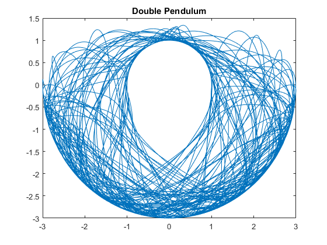 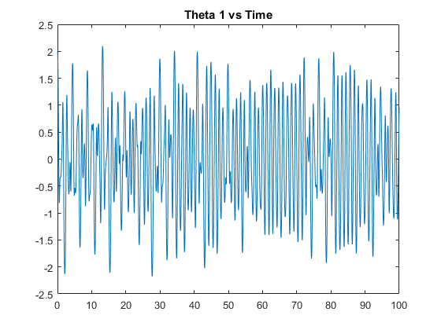 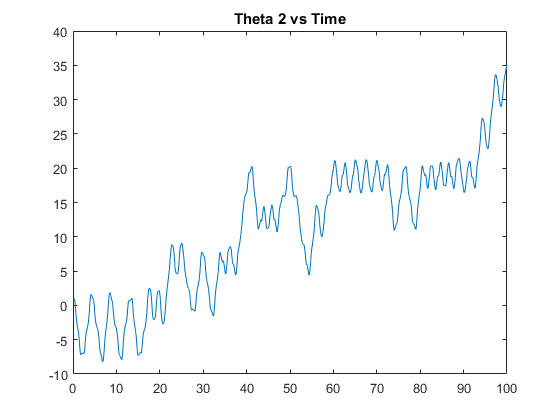 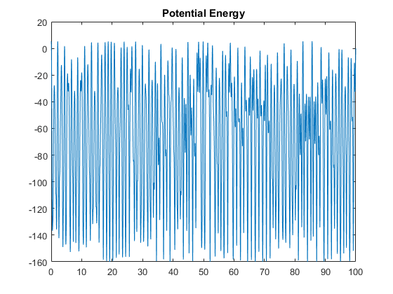 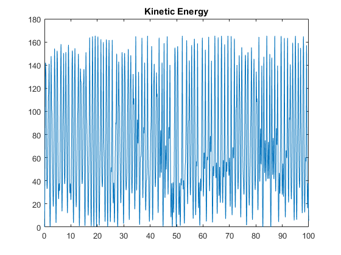 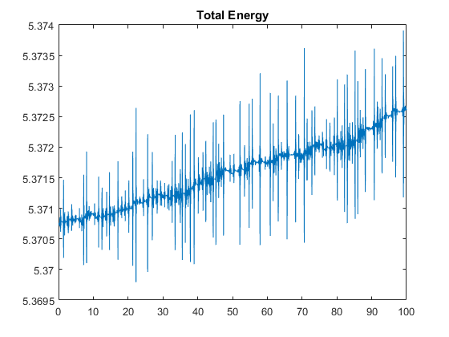 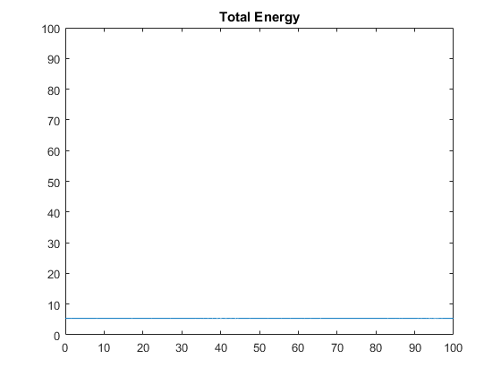
Case 3
clear; clc; % Constents g = 32; m1 = 1.5; m2 = 1; L1 = 1; L2 = 1.5; fprintf('For case 3, the mass and length differ from Case 1.\n') fprintf('The following inital values are used\nm1 = 1.5\n') fprintf('m2 = 1\nL1 = 1\nL2 = 1.5\nu1 = 1\nu1prime = 0\nv1 = 3\nv1prime = 0') u1 = 1; u1_prime = 0; v1 = 3; v1_prime = 0; % Solve Differential Equation options = odeset('AbsTol',1e-6,'RelTol',1e-6); [t,y]= ode45('pend_func' , [ 0 100], [ u1 ; u1_prime ; v1 ; v1_prime ],options); % Potential Energy PE = -(m1+m2)*g*L1*cos(y(:,1))-m2*g*L2*cos(y(:,3)); % Kinetic Energy KE = 1/2*m1*L1.^2*y(:,2).^2 + 0.5*m2*(L1.^2*y(:,2).^2+L2.^2*y(:,4).^2 + 2* L1*L2*y(:,2).*y(:,4).*cos(y(:,1)-y(:,3))); % Total Energy E=PE+KE; % Position Values x = L1* sin( y(:,1)) + L2*sin(y(:,3)); yplot = -L1* cos(y(: ,1)) - L2*cos(y(:,3)); % Plots plot(x, yplot); title('Double Pendulum') figure; plot(t,y(:,1)); title('Theta 1 vs Time') figure; plot(t,y(:,3)); title('Theta 2 vs Time') figure; plot(t,PE); title('Potential Energy') figure; plot(t,KE); title('Kinetic Energy')
For case 3, the mass and length differ from Case 1. The following inital values are used m1 = 1.5 m2 = 1 L1 = 1 L2 = 1.5 u1 = 1 u1prime = 0 v1 = 3 v1prime = 0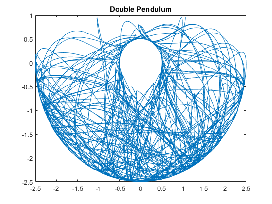 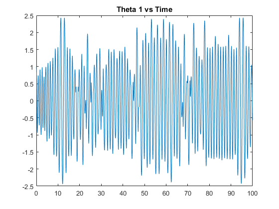 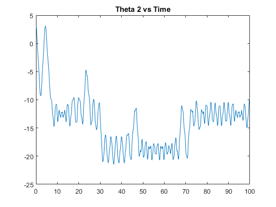 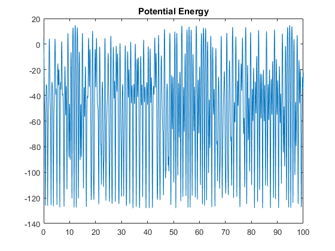 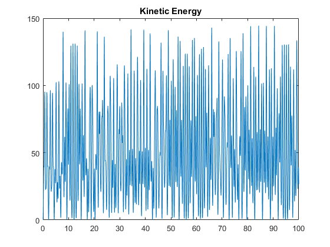
Conclution
In the words of Edward Lorenz, "Chaos [is] when the present determines the future, but the approximate present does not approximately determine the future.“1 Even though the double pendelum is chaotic and appears to be random, the amazing thing about math and physics is that with enough initial conditions, the path the pendulum will travel can be determined and graphed and simulated.